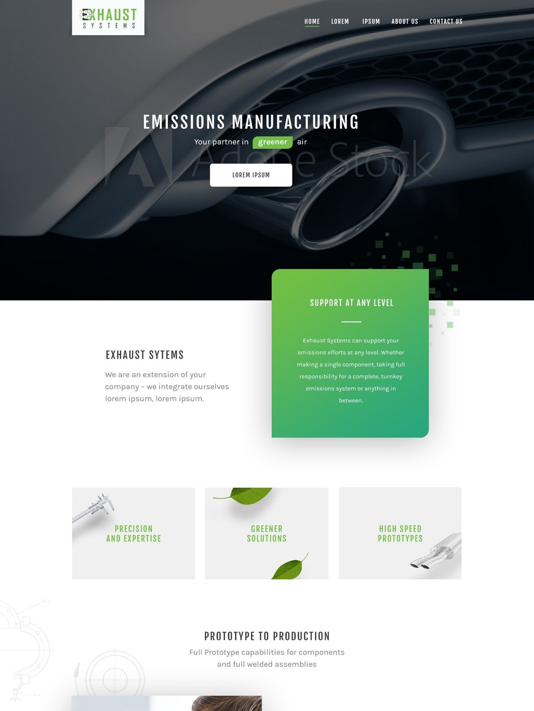

Oppgave 3
Oppgave ferdig: 04.09.2019
Innhold vs Design
Når det er snakk om innhold vs design så er innhold en klar vinner. En bruker kommer til en side på grunn av innhold, ikke design. Design derimot hjelper til med å holde på brukeren. Er nettsiden rotete og udødvendig avansert forsvinner brukeren fortere enn om siden hadde vært ryddig og enkel å bruke. Designet kan være komlisert, men må samtidig være oversiktlig og enkelt. Et eksempel på at innhold trumpher design er Craigslist. En ikke særlig pen nettside, men har all den informasjonen du skulle trenge.
I markedsføring gjennom reklame er det design som er viktigst. Da på det være "on point". Punkter som: "farger på nettsiden, størrelse på bilder, størrelse på paragrafer" har mye å si på et bra design.
Oppgaven til innholdet er å øke trafikken til nettsiden. Annet en reklamer og den slags så er innholdet folk er ute etter. Designets oppgave er å bevare trafikken. Ved å gi et godt inntrykk er håpet at brukeren kommer tilbake til denne netsiden kontra enn annen.
Eksempelbildet til høyre viser en ryddig og pen side. Den har farger som matcher, fine bilder og generelt et veldig oversiktlig design.
Nå til dags finnes det så mange nettsider at begge er essensielle faktorer. Det er mest sannsynlig flere websider som leverer det samme produktet/informasjonen. Da er det både produktet/informasjonen og designet på nettsiden som påvirker brukeren.